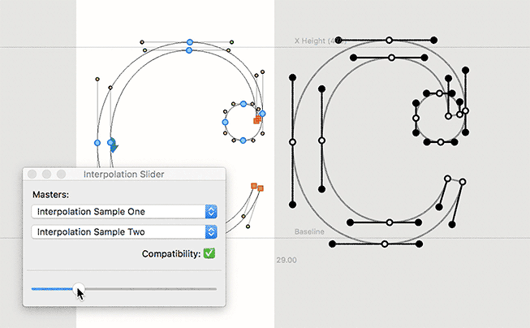

by Andy Clymer
www.andyclymer.com
Created for the Type@Cooper “Drawing for Interpolation” workshop at the Typographics conference in New York, June 2018
The extension is designed to give a simple interface to preview how the points move during an interpolation of two masters. After selecting two UFO masters, an interpolated glyph will be drawn in te current glyph window.
